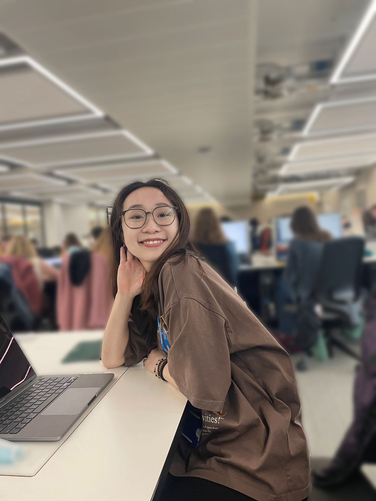

我是唐慕燃. 程序员届的小学生.
我目前可进行 安置或实习工作 .

我就读于纽卡斯尔大学。对我来说，主修计算机 对我来说，学习计算机科学不仅仅是为了进修，更多的是为了娱乐。
我是一个喜欢挑战和学习新事物的人。进入大学之后，我有了更多可支配的时间来做自己喜欢的事情。 我在网上注册了许多课程作为学校课程的补充。我在挑战和新事物的学习中锻炼了许多能力。毫无疑问， 我在学校学到许多重要的知识和计算机相关的技能。 除此之外， 我还利用课余时间来提高在传媒和设计领域的技能。
网页开发
我有一年的网络开发经验，有全栈开发的能力。我擅长使用Flask来开发网站。为了提高网页
开发技能， 我完成Udemy上的课程，系统地学习了网页开发的进阶知识。正如你所看到的网页，
是由我自主设计建立的。同时，在大学中，我和我的同学们一起开发了一个以教育青少年为主的关于
联合国可持续发展气候行动的网站。
面向对象开发
自从进入大学以来，我在很多项目中都使用了面向对象的编程技术。我有Python和Java
的面向对象开发的经验。例如，我在Java中以面向对象开发为基础为计算机学院开发了排课系统。
Microsoft Office
熟练使用微软办公室。熟练利用Word进行文本编辑和修改。
擅长利用Excel对大量数据进行提取、分析和可视化处理。
熟练使用PowerPoint制作演示材料和海报。
擅长利用Excel对大量数据进行提取、分析和可视化处理。
熟练使用PowerPoint制作演示材料和海报。
Photoshop
自学Photoshop。熟练使用PS修改照片，
例如通过改变曝光和色调来表达不同的情感。
有将PS技术使用在处理图像机器学习结果的经验。
有将PS技术使用在处理图像机器学习结果的经验。
视频屏剪辑
知道如何使用iMovie来剪辑视频。我经常为我的频道上的微博剪辑视频。
我曾把这个技术用于处理我的图像学习结果，目的是为了清楚地显示算法的效果。
我曾把这个技术用于处理我的图像学习结果，目的是为了清楚地显示算法的效果。
自媒体运营
我在小红书运营了一个账号，主要分享我在英国留学经历和旅行vlog。
英语能力
雅思6.5
英国本科在读
口语流利
擅长使用英语写正式和技术报告
英国本科在读
口语流利
擅长使用英语写正式和技术报告
韩语能力
A1级别
基础日常沟通
基础日常沟通

在我主修计算机科学的父亲身边长大，他对计算机科学的热情对我影响很大。小时候，我家里就有好多电子设备。 例如：交换机，笔记本，台式机。他会给我科普各种计算机相关知识。在他的影响下，我从幼儿园开始就会简单使用电脑。 随着时间的推移，我对信息技术的兴趣日益增加。因此带着热情，我选择了计算机科学作为我的专业。 在大学中，为了最大限度的获取计算机相关知识，我从不缺席任何课和实验联系，同时努力做好学校的每个项目。 因此，在所有课程中我都取得优异的成绩。
我在校园里最喜欢的时光是在实验室里与一群人坐在一起，讨论我们想做的事情， 并互相帮助解决问题。

我认为，学习不应脱离工业实践。在工作期间，我学到了新的技能， 找到了我想在未来学校生活中继续学习的专业分支。
支付宝华南区政企线实习
2021/7 – 2021/9
在业务发展部工作，我的主要职责是通过Excel进行数据筛选和分析。
在一些项目中，我的工作是与业务经理沟通。
在这次实习中，我学到了很多。首先是专注于解决问题， 而不是抱怨制造问题的人。第二，我学会了如何快乐地工作和认真地生活。 为什么不认真工作，快乐生活呢？在我看来，许多人认为应该写成 "认真工作 "的 原因是，传统上，人们把工作看作是一项任务，一项苦差。所以，人们必须强迫 自己负责任。但是，如果人们热爱自己的工作，他们就会认真对待它。 此外，会有一种创新精神，一种冒险精神，一种愿意承担责任的精神， 等等。因此，更根本的是要对自己的工作感到满意，要热爱自己的工作。
在这次实习中，我学到了很多。首先是专注于解决问题， 而不是抱怨制造问题的人。第二，我学会了如何快乐地工作和认真地生活。 为什么不认真工作，快乐生活呢？在我看来，许多人认为应该写成 "认真工作 "的 原因是，传统上，人们把工作看作是一项任务，一项苦差。所以，人们必须强迫 自己负责任。但是，如果人们热爱自己的工作，他们就会认真对待它。 此外，会有一种创新精神，一种冒险精神，一种愿意承担责任的精神， 等等。因此，更根本的是要对自己的工作感到满意，要热爱自己的工作。
英孚助教
2020/12 – 2021/5
主要负责向家长反馈学生的学习情况，提供一些有针对性的学习建议。
充当老师和家长之间沟通的桥梁，将家长的意见反馈给老师。
在这份工作中，我得到的一点是耐心。我在班上与老师和学生一起工作。 由于学生还在上幼儿园，我必须尽可能耐心地帮助他们学习。 我培养的另一件事是沟通的技巧。人的情绪是不可避免的。 有时家长对老师不满意，有时老师对家长不满意。这个时候， 我的工作就是与家长或老师进行交流。我认为沟通的关键是要有耐心， 换位思考，然后给予积极的反馈。工作中不开心的问题通常可以通过沟通来解决。
在这份工作中，我得到的一点是耐心。我在班上与老师和学生一起工作。 由于学生还在上幼儿园，我必须尽可能耐心地帮助他们学习。 我培养的另一件事是沟通的技巧。人的情绪是不可避免的。 有时家长对老师不满意，有时老师对家长不满意。这个时候， 我的工作就是与家长或老师进行交流。我认为沟通的关键是要有耐心， 换位思考，然后给予积极的反馈。工作中不开心的问题通常可以通过沟通来解决。

摄影 Disha Gulati
后期 Muran Tang